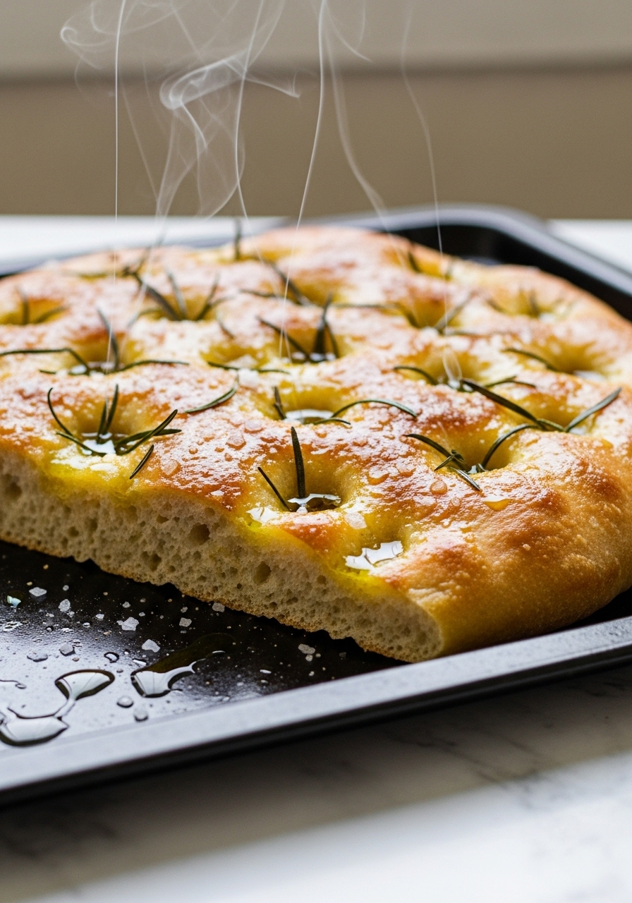
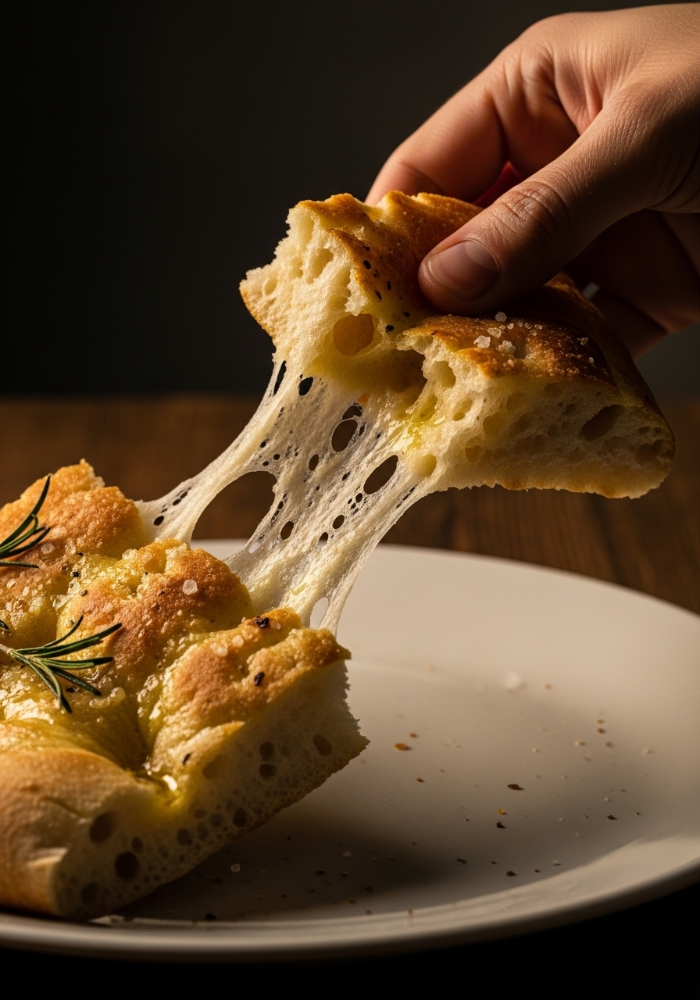

La vera focaccia italiana — la focaccia genovese della Liguria — non assomiglia per niente al pane spesso e secco che si trova nella maggior parte dei forni. Ha le fossette colme di olio extravergine d'oliva, è croccante sotto dove l'olio ha dorato la teglia, incredibilmente morbida e soffice all'interno, e rifinita con sale marino grosso. Questa ricetta la centra perfettamente.

Senza ImpastatriceLa maggior parte delle ricette di focaccia si limita a irrorare con olio in superficie. L'autentica focaccia genovese usa invece la salamoia — un'emulsione vigorosa di olio extravergine, acqua e sale sbattuti insieme. Quando questa salamoia viene versata sull'impasto e spinta nelle fossette, crea due cose: le pozze di olio che rendono croccante la superficie, e il vapore che mantiene l'interno incredibilmente umido. Questo è il passaggio che distingue la vera focaccia ligure da tutto il resto.
La focaccia ligure classica si serve liscia con solo sale in scaglie — il sapore dell'impasto e dell'olio extravergine basta e avanza. Ma la focaccia è infinitamente versatile: cipolle rosse a fette e olive (focaccia barese), pomodorini e origano (focaccia pugliese), rosmarino e sale grosso (la versione più diffusa), oppure cipolle caramellate e salvia fresca. I formaggi — mozzarella, taleggio — possono essere aggiunti negli ultimi 5 minuti di cottura.
Ingredienti
Procedimento

La focaccia è migliore il giorno stesso della cottura. Conserva gli avanzi a temperatura ambiente in un sacchetto di carta per 1-2 giorni — mai in frigorifero, che la indurisce. Per riscaldarla: metti in forno caldo (200°C) per 5 minuti o in una padella calda finché il fondo torna croccante. La focaccia si congela bene — taglia a fette, congela, e tosta direttamente da congelata.
L'impasto non ha lievitato abbastanza, il lievito era scaduto (controlla la data), oppure hai aggiunto troppa farina. L'impasto della focaccia deve essere molto umido e appiccicoso — se riesci a lavorarlo con le mani, probabilmente ha troppa farina.
È essenziale abbondante olio extravergine nella teglia — circa 3-4 cucchiai. L'olio deve ricoprire visibilmente il fondo della teglia. Cuoci ad alta temperatura (230°C) e controlla il fondo sollevando un angolo dopo 20 minuti.
Sì — la lievitazione lenta in frigorifero migliora notevolmente il sapore. Dopo l'impasto, copri e metti in frigorifero per tutta la notte (fino a 18 ore). Il giorno dopo, porta a temperatura ambiente per 1 ora prima di stendere e infornare. Il sapore sarà molto più complesso.
La farina di forza dà la migliore consistenza e croccantezza. La farina 00 italiana produce una focaccia più morbida e delicata. La farina 0 comune funziona se non hai altro. Evita la farina integrale in questa ricetta — rende la focaccia densa.
Sì — scioglilo nell'acqua tiepida con lo zucchero e aspetta 5-10 minuti finché fa la schiuma. Poi procedi con la ricetta come indicato. Usa circa 20g di lievito fresco al posto della bustina da 7g di lievito secco.